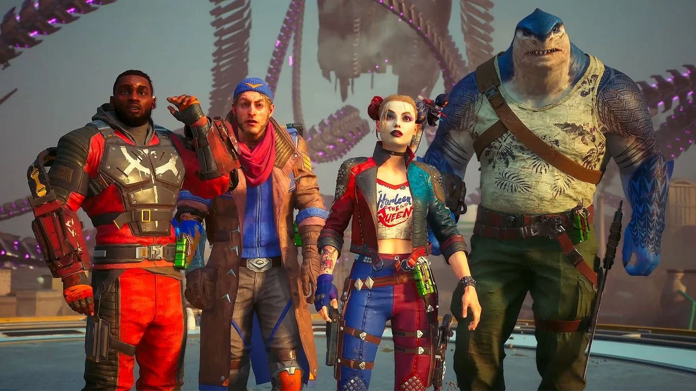
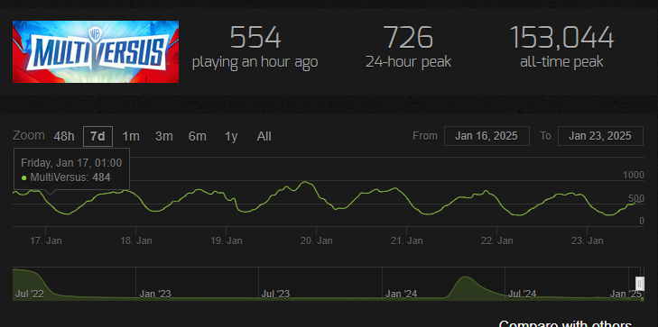

Warner Bros. Interactive announced on Thursday that David Haddad, the president of its gaming division, is stepping down. The announcement follows the company's latest financial results, which identified the gaming division as "substantially underperforming its potential."
“David has thoughtfully and purposefully chosen a time when our release schedule is lighter which will help minimize disruption to our ongoing projects and strategic plans and allow this team to smoothly prepare for its next record-breaking title."
This isn't a surprise to anyone paying attention to the video games put out by the company in the last few years - both Suicide Squad: Kill the Justice League and Multiversus massively underperformed.

Some have blamed the poor sales of Suicide Squad: Kill the Justice League on the game's genre as a live-service shooter, but I don’t think that’s entirely accurate. Helldivers 2, another live-service shooter, launched shortly after and achieved immense success, selling over a million copies—even without being sold on Xbox.
When it comes to Multiversus, I'm not sure there's much of an appetite for a smash bros-like game with a new IP. Multiversus isn't the only game to release these last few years trying to tap into that genre niche - Nickelodeon All-Star Brawl 2, which released in November 2023, is currently sitting at 13 players according to steam charts, with an all-time peak of 1,578 players.

I played Multiversus and I enjoyed it a lot for what it was despite not being the biggest fan of fighting games. I really enjoyed some of the IP like Adventure Time, but it wasn't enough for me to stick around.
I appreciate the effort that went into pulling Multiversus from the store and reworking it, but I think it was pretty clear from its first launch that the interest just wasn't there.
Warner Bros. hasn't put out all flops, though - Hogwarts Legacy was a massive success, and the company has shared that making a sequel is a priority for the company.
I hope this change in leadership will lead to better games and less microtransactions - David Haddad greenlit many controversial games such as Shadow of War, which was a single-player game that launched with loot boxes of all things and had to remove them less than a year later due to player backlash and poor sales.